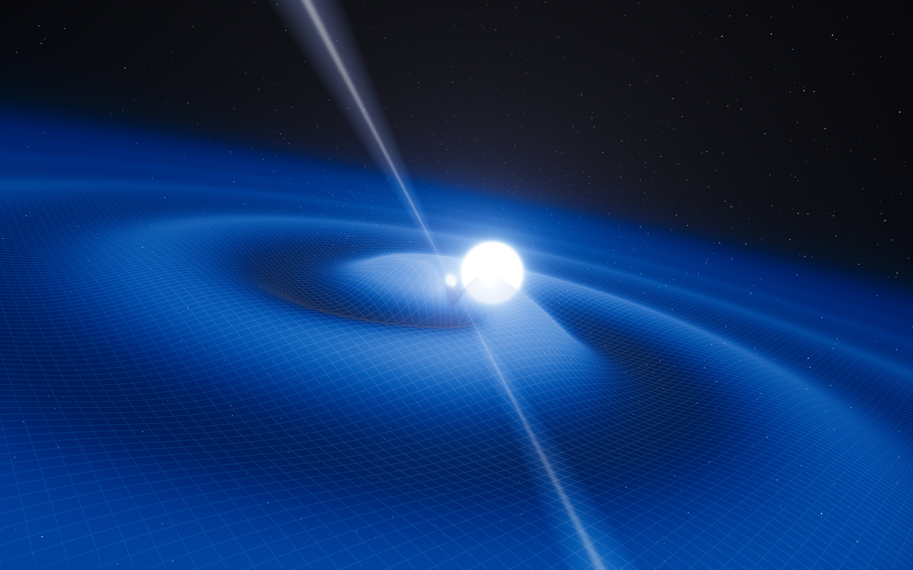

Neutron Star Types
Neutron Star

A neutron star is the incredibly dense, city-sized remnant of a massive star that has collapsed under its own gravity following a supernova explosion. When a star much larger than our Sun runs out of fuel, its core implodes with such force that protons and electrons are crushed together to form a solid ball of neutrons, creating the densest form of observable matter in the universe.
Pulsar
A pulsar is a highly magnetized, rapidly rotating neutron star that acts as a "cosmic lighthouse." As it spins, it emits intense beams of electromagnetic radiation from its magnetic poles. Because the star’s magnetic poles are usually not aligned with its rotational axis, these beams sweep through space like the light from a lighthouse.
Magnetar

A magnetar is a rare and terrifyingly powerful type of neutron star defined by a magnetic field so intense it ranks as the most powerful magnetic force in the known universe. While a standard pulsar is powered by its rotation, a magnetar is powered by the decay of its magnetic field, which can reach up to 1 quadrillion ($10^{15}$) Gauss.
Two possibilities exist: either we are alone in the Universe or we are not. Both are equally terrifying.
—Arthur C. Clarke
Learn More About Neutron Stars!
Our website is a great resource for neutron stars. Click the button and learn.